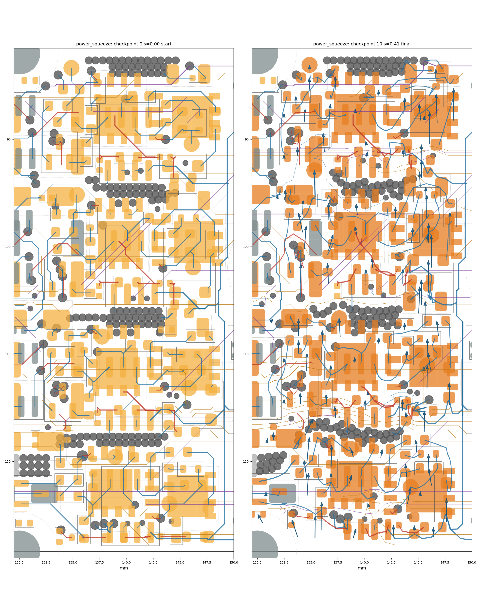
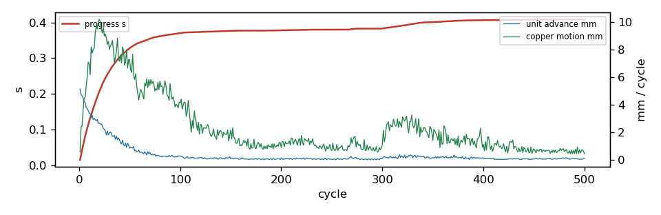

500 cycles in 1467.1 s, progress s = 0.4086; 0/0 ghosts born; 110 parts moved; 18/96 reroutes verified in 5 rounds. Gate: 11/11 checkpoints pass (baseline 2 violations); length caps hit: 5; check_sync: True.
Region [130.0, 82.0, 149.5, 128.5]; rules clearance 0.1 mm, hole 0.254, edge 0.3, guard 0.015. 112 movable parts, 737 dynamic segments, 988 nodes, 0 ghosts. Orange pads = movable parts (dark orange = moved); grey = fixed; red = ghosts at their current scale; blue arrows = part displacement. Copper by layer: F red, B blue, In1 green, In2 purple, In3 brown, In4 teal; static copper grey.


| step | s | tag | unconnected | new_violations | static_missing | fixed_moved | ok | new_desc |
|---|---|---|---|---|---|---|---|---|
| 0 | 0.0 | start | 103 | 0 | 0 | [] | True | [] |
| 1 | 0.103 | 103 | 0 | 0 | [] | True | [] | |
| 2 | 0.207 | 103 | 0 | 0 | [] | True | [] | |
| 3 | 0.302 | 103 | 0 | 0 | [] | True | [] | |
| 4 | 0.38 | reroute | 103 | 0 | 0 | [] | True | [] |
| 5 | 0.383 | reroute | 103 | 0 | 0 | [] | True | [] |
| 6 | 0.4 | 103 | 0 | 0 | [] | True | [] | |
| 7 | 0.407 | reroute | 103 | 0 | 0 | [] | True | [] |
| 8 | 0.408 | reroute | 103 | 0 | 0 | [] | True | [] |
| 9 | 0.408 | reroute | 103 | 0 | 0 | [] | True | [] |
| 10 | 0.409 | final | 103 | 0 | 0 | [] | True | [] |
none
| ref | dx | dy | mm | group |
|---|---|---|---|---|
| TP5 | -0.004 | -3.003 | 3.003 | |
| D10 | 0.0 | -3.0 | 3.0 | |
| TP3 | 0.0 | -3.0 | 3.0 | |
| R25 | -0.0 | -3.0 | 3.0 | |
| R41 | -0.003 | -2.99 | 2.99 | |
| D15 | -0.093 | -2.695 | 2.697 | |
| R75 | -0.018 | -2.576 | 2.576 | |
| C15 | 0.104 | -2.498 | 2.5 | |
| C1 | 0.021 | -2.425 | 2.425 | |
| C51 | 0.229 | -2.374 | 2.385 | |
| R37 | -0.041 | -2.324 | 2.324 | |
| TP4 | -0.052 | -2.292 | 2.293 | |
| D18 | 0.002 | -2.216 | 2.216 | |
| R30 | 0.166 | -2.169 | 2.175 | |
| R77 | 0.137 | -2.169 | 2.173 | |
| D12 | 0.015 | -2.172 | 2.172 | |
| R76 | 0.023 | -2.16 | 2.16 | |
| TP2 | 0.029 | -2.122 | 2.122 | |
| D3 | -0.005 | -2.066 | 2.066 | |
| C54 | 0.023 | -2.014 | 2.014 | |
| D14 | 0.042 | -2.003 | 2.003 | |
| D20 | 0.044 | -1.958 | 1.958 | |
| R17 | -0.044 | -1.95 | 1.95 | |
| R28 | -0.086 | -1.928 | 1.93 | |
| R79 | -0.281 | -1.842 | 1.863 | |
| R33 | -0.378 | -1.79 | 1.829 | |
| R31 | 0.038 | -1.781 | 1.781 | |
| Q2 | 0.024 | -1.776 | 1.776 | |
| R43 | -0.111 | -1.763 | 1.766 | |
| TP1 | -0.086 | -1.7 | 1.702 | |
| R13 | -0.23 | -1.647 | 1.663 | |
| R105 | -0.534 | -1.568 | 1.656 | |
| R14 | 0.034 | -1.649 | 1.649 | |
| R48 | -0.0 | -1.64 | 1.64 | |
| D11 | 0.055 | -1.616 | 1.617 | |
| R78 | -0.25 | -1.58 | 1.6 | |
| TP9 | 0.289 | -1.554 | 1.581 | |
| R101 | 0.677 | -1.405 | 1.56 | |
| R27 | 0.435 | -1.493 | 1.555 | |
| R46 | -0.138 | -1.542 | 1.548 |
70 more not shown
| net | region_mm | grown_mm | growth_pct | allow_mm | cap_mm | at_cap |
|---|---|---|---|---|---|---|
| Net-(D12-K) | 1.76 | 0.579 | 32.9 | 0.2 | 0.8 | |
| Net-(C54-Pad1) | 2.18 | 0.643 | 29.5 | 0.5 | 2.0 | |
| Net-(D7-K) | 1.58 | 0.375 | 23.8 | 0.2 | 0.8 | |
| GND | 84.27 | 19.409 | 23.0 | None | None | |
| Net-(C53-Pad1) | 2.34 | 0.503 | 21.5 | 0.5 | 2.0 | |
| Net-(C9-Pad1) | 2.4 | 0.502 | 20.9 | 0.5 | 2.0 | |
| Net-(C26-Pad1) | 2.67 | 0.537 | 20.1 | 0.535 | 2.0 | |
| Net-(C33-Pad1) | 2.83 | 0.567 | 20.1 | 0.566 | 2.0 | |
| Net-(C7-Pad1) | 2.55 | 0.509 | 20.0 | 0.51 | 2.0 | |
| /ENC_B_SW | 27.23 | 5.414 | 19.9 | 5.447 | 13.618 | |
| /D | 8.25 | 1.603 | 19.4 | 1.65 | 4.125 | |
| /B_P | 29.41 | 4.977 | 16.9 | 5.882 | 14.705 | |
| Vdrive | 133.36 | 22.162 | 16.6 | 40.009 | 133.362 | |
| Net-(C25-Pad1) | 2.88 | 0.468 | 16.3 | 0.575 | 2.0 | |
| Net-(D20-K) | 1.28 | 0.199 | 15.5 | 0.2 | 0.8 | |
| Net-(D11-K) | 1.31 | 0.201 | 15.3 | 0.2 | 0.8 | |
| Net-(D14-K) | 4.02 | 0.612 | 15.2 | 0.201 | 0.8 | |
| Net-(D19-K) | 1.39 | 0.2 | 14.5 | 0.2 | 0.8 | |
| Net-(Q3-B) | 1.61 | 0.218 | 13.5 | 0.0 | 0.3 | |
| Net-(D16-K) | 1.51 | 0.2 | 13.2 | 0.2 | 0.8 | |
| +3V3 | 81.45 | 10.58 | 13.0 | 24.435 | 81.452 | |
| Net-(U15-NC) | 16.35 | 2.009 | 12.3 | 3.27 | 8.174 | |
| Net-(D6-K) | 1.42 | 0.167 | 11.8 | 0.2 | 0.8 | |
| C_PWM_L\ | 14.95 | 1.636 | 10.9 | 1.495 | 3.738 | |
| /I2C_SCL | 35.41 | 3.505 | 9.9 | 7.082 | 17.706 | |
| B_PWM_H | 12.14 | 1.074 | 8.8 | 1.214 | 3.036 | |
| /C_P | 27.53 | 2.333 | 8.5 | 5.506 | 13.765 | |
| D_PWM_L\ | 30.41 | 2.553 | 8.4 | 3.041 | 7.602 | |
| Net-(Q4-E) | 3.77 | 0.3 | 8.0 | 0.0 | 0.3 | |
| C_PWM_H | 11.92 | 0.924 | 7.8 | 1.192 | 3.0 | |
| Net-(U12-VB) | 4.0 | 0.3 | 7.5 | 0.0 | 0.3 | YES |
| VMOT | 20.59 | 1.531 | 7.4 | 6.177 | 20.589 | |
| B_PWM_L\ | 22.6 | 1.603 | 7.1 | 2.26 | 5.649 | |
| /I2C_SDA | 29.18 | 1.716 | 5.9 | 5.836 | 14.591 | |
| /A_P | 33.52 | 1.818 | 5.4 | 6.704 | 16.76 | |
| Net-(U12-HO) | 6.0 | 0.312 | 5.2 | 0.0 | 0.3 | YES |
| /H2_SW | 34.19 | 1.748 | 5.1 | 6.838 | 17.096 | |
| Net-(D3-K) | 4.96 | 0.25 | 5.0 | 0.248 | 0.8 | |
| Net-(Q1-E) | 6.04 | 0.304 | 5.0 | 0.0 | 0.302 | YES |
| Net-(D18-K) | 7.13 | 0.358 | 5.0 | 0.357 | 1.07 |
47 more not shown
| unit | hard_walled | blocker | net | ref | margin | floor | pos |
|---|---|---|---|---|---|---|---|
| C26 | yes | zone_edge | GND | -0.235 | -0.185 | ||
| C34 | yes | zone_edge | GND | -0.0498 | 0.0 | ||
| C44 | yes | zone_edge | GND | -0.0354 | -0.032 | ||
| D9 | courtyard | R20 | -0.05 | 0.003 | |||
| R109 | yes | pad | H3. | -0.8386 | -0.796 | [130.0, 82.0] | |
| R109 | yes | pad | H3. | -1.1759 | -1.1463 | [130.0, 82.0] | |
| R39 | courtyard | R40 | -0.05 | 0.003 | |||
| grp:D13 | courtyard | R40 | -0.05 | 0.003 | |||
| AL1 | yes | zone_edge | /A_P | -0.0433 | 0.0 | ||
| CH1 | yes | dyn_seg | /2CGH | -0.0072 | 0.0 | [143.929, 89.181] | |
| CH1 | yes | zone_edge | VMOT | -0.9163 | -0.9091 | ||
| CH1 | yes | courtyard | CL1 | 0.0021 | 0.003 | ||
| CH1 | yes | courtyard | C44 | -0.05 | 0.003 | ||
| grp:CL1 | dyn_via | GND | -0.0042 | 0.015 | [138.686, 83.142] | ||
| grp:CL1 | dyn_via | GND | -0.0315 | 0.015 | [141.133, 83.171] | ||
| grp:CL1 | dyn_via | GND | -0.0042 | 0.015 | [139.915, 83.142] | ||
| grp:CL1 | dyn_via | /2CGH | -0.0243 | 0.015 | [143.685, 89.418] | ||
| R56 | courtyard | H3 | -0.05 | 0.003 | |||
| Q4 | static_via | /D | 0.0019 | 0.015 | [129.7, 121.1] | ||
| Q4 | static_via | /D | -0.0244 | 0.015 | [129.7, 121.1] | ||
| Q4 | static_via | /D | -0.0325 | 0.015 | [129.7, 121.1] | ||
| Q4 | static_via | /D | 0.0135 | 0.015 | [129.7, 121.1] | ||
| grp:D7 | dyn_seg | Net-(D7-K) | -0.0457 | 0.0 | [136.249, 109.345] | ||
| grp:D7 | dyn_via | /A_P | -0.0243 | 0.015 | [137.296, 109.332] | ||
| grp:D7 | dyn_via | /A_P | -0.03 | 0.015 | [137.296, 109.332] | ||
| grp:D7 | dyn_via | /A_P | -0.03 | 0.015 | [137.296, 109.332] | ||
| C28 | dyn_via | Net-(U15-NC) | 0.0129 | 0.015 | [141.984, 95.435] | ||
| C28 | dyn_via | Net-(U15-NC) | -0.0058 | 0.015 | [141.984, 95.435] | ||
| C28 | dyn_via | Net-(U15-NC) | -0.0348 | 0.015 | [141.984, 95.435] | ||
| C28 | pad | /B_P | BH1.1 | -0.0524 | -0.02 | [143.102, 97.034] | |
| C48 | pad | VMOT | CH2.3 | -0.0056 | 0.015 | [145.774, 122.801] | |
| C48 | pad | VMOT | CH2.3 | -0.0346 | 0.015 | [145.774, 122.801] | |
| CL1 | dyn_via | GND | -0.007 | 0.015 | [138.686, 83.142] | ||
| CL1 | dyn_via | GND | -0.0349 | 0.015 | [141.133, 83.171] | ||
| CL1 | dyn_via | GND | -0.0073 | 0.015 | [139.915, 83.142] | ||
| R103 | dyn_via | GND | -0.032 | 0.015 | [142.615, 107.012] | ||
| R55 | courtyard | R56 | -0.05 | 0.003 | |||
| grp:C10 | pad | /A_P | AL1.3 | -0.0588 | -0.02 | [139.081, 110.859] | |
| grp:C10 | dyn_via | GND | -0.0039 | 0.015 | [143.08, 107.34] | ||
| grp:C10 | pad | Net-(D6-K) | R10.2 | 0.0008 | 0.015 | [143.97, 108.858] | |
| grp:C10 | dyn_seg | Net-(U1-VB) | -0.0314 | 0.015 | [143.944, 107.948] | ||
| grp:R29 | dyn_seg | Net-(U6-HO) | -0.0408 | 0.0 | [143.715, 99.558] | ||
| grp:R29 | courtyard | C28 | -0.05 | 0.003 | |||
| grp:R29 | dyn_seg | Net-(U6-HO) | 0.005 | 0.015 | [145.217, 98.084] | ||
| grp:R29 | dyn_seg | Net-(U6-HO) | -0.017 | 0.015 | [145.217, 98.084] | ||
| grp:R55 | courtyard | H3 | -0.05 | 0.003 | |||
| TP6 | yes | board_edge | -0.035 | 0.015 | |||
| CL2 | courtyard | CH2 | -0.05 | 0.003 | |||
| BH1 | yes | zone_edge | /B_P | -0.0493 | 0.0 | ||
| U12 | dyn_seg | D_PWM_L\ | -0.0497 | 0.0 | [140.124, 124.772] | ||
| U12 | dyn_seg | Net-(U12-HO) | -0.0183 | 0.015 | [141.506, 122.479] | ||
| U12 | dyn_seg | Net-(U12-HO) | -0.035 | 0.015 | [141.506, 122.479] | ||
| U12 | dyn_seg | Net-(U12-HO) | -0.035 | 0.015 | [141.506, 122.479] | ||
| grp:C36 | dyn_via | GND | -0.0038 | 0.015 | [138.686, 83.142] | ||
| grp:C36 | dyn_via | GND | -0.0315 | 0.015 | [141.133, 83.171] | ||
| grp:C36 | dyn_via | GND | -0.004 | 0.015 | [139.915, 83.142] | ||
| grp:C36 | dyn_via | GND | -0.0063 | 0.015 | [137.1, 82.65] | ||
| grp:D9 | courtyard | R23 | -0.05 | 0.003 | |||
| grp:TH1 | dyn_via | GND | 0.0 | 0.015 | [139.878, 95.044] | ||
| grp:TH1 | dyn_via | GND | -0.0293 | 0.015 | [139.878, 95.044] |
307 more not shown
| mover | blocker | what | hits |
|---|---|---|---|
| node152 | pad | U5.8 [/C_N] | 4856 |
| node148 | pad | U10.1 [/C_P] | 1960 |
| Q4 | static_via | /D | 1922 |
| node304 | pad | U10.8 [/A_N] | 1904 |
| grp:Q4 | static_via | /D | 1701 |
| R109 | pad | H3. | 1000 |
| node289 | board_edge | 970 | |
| node311 | pad | H3. | 944 |
| node151 | board_edge | 942 | |
| node252 | board_edge | 784 | |
| node746 | length_cap | /2DGL | 537 |
| C26 | zone_edge | GND | 500 |
| C34 | zone_edge | GND | 500 |
| C44 | zone_edge | GND | 500 |
| R39 | courtyard | R40 | 500 |
| R56 | courtyard | H3 | 498 |
| R23 | zone_edge | /C_N | 497 |
| node129 | board_edge | 497 | |
| TP6 | board_edge | 495 | |
| grp:R55 | courtyard | H3 | 494 |
| AH1 | zone_edge | /A_P | 494 |
| node37 | board_edge | 492 | |
| node97 | board_edge | 492 | |
| node60 | board_edge | 492 | |
| CH2 | zone_edge | /D | 492 |
{
"name": "power_squeeze",
"board": "/home/sequoia/pcb/rp2350-motor-controller-lean-jiggle/hardware/rp2350_driver.kicad_pcb",
"region": [
130.0,
82.0,
149.5,
128.5
],
"rules": {
"guard": 0.015
},
"locked": {
"sides": [],
"refs": [
"H3",
"H4",
"J1",
"J2",
"J9",
"J10",
"C80",
"C39",
"C42",
"D5"
],
"nets": [
"^/USB_D",
"^/CAN0_"
],
"rects": []
},
"mobility": {
"default": 1.0
},
"groups": {},
"drive": {
"inflate": [],
"shove": [
{
"rect": [
130.0,
82.0,
149.5,
128.5
],
"vector": [
0.0,
-3.0
]
}
]
},
"step": 0.05,
"snapshots": 10,
"cycles": 500,
"data": "/home/sequoia/pcb/rp2350-motor-controller-lean-jiggle/hardware/tools/settle/configs/data/power_squeeze"
}
{
"default": {
"k": 0.5,
"allow": 0.2,
"cap": 0.5,
"allow_mm": 0.5,
"cap_mm": 2.0
},
"classes": {
"VMOT": {
"k": 0.2,
"allow": 0.3,
"cap": 1.0,
"allow_mm": 1.0,
"cap_mm": 6.0
},
"power": {
"k": 0.2,
"allow": 0.3,
"cap": 1.0,
"allow_mm": 1.0,
"cap_mm": 6.0
},
"usb_5A": {
"k": 0.2,
"allow": 0.3,
"cap": 1.0,
"allow_mm": 1.0,
"cap_mm": 6.0
},
"low_power": {
"k": 0.2,
"allow": 0.3,
"cap": 1.0,
"allow_mm": 1.0,
"cap_mm": 6.0
}
},
"nets": {
"^GND": {
"k": 0.0,
"allow": 1000000000.0,
"cap": 1000000000.0
},
"^(VMOT|Vdrive|VBUS|\\+3V3|\\+1V1|\\+5V_ISO|/V_ENC|/V_SW)$": {
"k": 0.2,
"allow": 0.3,
"cap": 1.0,
"allow_mm": 1.0,
"cap_mm": 6.0
},
"^Net-\\(U(1|6|7|12)-(HO|LO|VB)\\)$": {
"k": 4.0,
"allow": 0.0,
"cap": 0.05,
"allow_mm": 0.0,
"cap_mm": 0.3
},
"^/2[ABCD]G[HL]$": {
"k": 4.0,
"allow": 0.0,
"cap": 0.05,
"allow_mm": 0.0,
"cap_mm": 0.3
},
"^Net-\\(Q[1-4]-[BE]\\)$": {
"k": 4.0,
"allow": 0.0,
"cap": 0.05,
"allow_mm": 0.0,
"cap_mm": 0.3
},
"^Net-\\((R(24|59|62|67|70)|D\\d+)-": {
"k": 2.0,
"allow": 0.05,
"cap": 0.15,
"allow_mm": 0.2,
"cap_mm": 0.8
},
"^/USB_D": {
"k": 4.0,
"allow": 0.0,
"cap": 0.02,
"allow_mm": 0.0,
"cap_mm": 0.1
},
"^/CAN0_": {
"k": 4.0,
"allow": 0.0,
"cap": 0.02,
"allow_mm": 0.0,
"cap_mm": 0.1
},
"^/ENC_[A-D]_(P|N)(_SW)?$": {
"k": 1.0,
"allow": 0.1,
"cap": 0.15,
"allow_mm": 0.5,
"cap_mm": 2.0
},
"^/ENC_[A-D]_TRX_": {
"k": 1.0,
"allow": 0.1,
"cap": 0.2,
"allow_mm": 0.5,
"cap_mm": 2.0
},
"^[ABCD]_PWM_": {
"k": 1.0,
"allow": 0.1,
"cap": 0.25,
"allow_mm": 0.5,
"cap_mm": 3.0
},
"SENSE": {
"k": 1.0,
"allow": 0.1,
"cap": 0.2,
"allow_mm": 0.5,
"cap_mm": 2.0
}
}
}
08 adv=0.053mm copper=1.021mm [534s] cycle 190: s=0.378 ghosts=0/0 blocked=108 adv=0.075mm copper=0.881mm [549s] cycle 195: s=0.378 ghosts=0/0 blocked=107 adv=0.055mm copper=0.961mm [564s] cycle 200: s=0.378 ghosts=0/0 blocked=106 adv=0.125mm copper=0.897mm [578s] cycle 205: s=0.378 ghosts=0/0 blocked=106 adv=0.102mm copper=1.164mm [592s] cycle 210: s=0.379 ghosts=0/0 blocked=107 adv=0.083mm copper=1.586mm [607s] cycle 215: s=0.379 ghosts=0/0 blocked=106 adv=0.121mm copper=1.271mm [621s] cycle 220: s=0.379 ghosts=0/0 blocked=108 adv=0.057mm copper=1.768mm [636s] cycle 225: s=0.379 ghosts=0/0 blocked=106 adv=0.132mm copper=1.397mm [650s] cycle 230: s=0.380 ghosts=0/0 blocked=108 adv=0.068mm copper=1.241mm [665s] cycle 235: s=0.380 ghosts=0/0 blocked=107 adv=0.054mm copper=0.916mm [679s] cycle 240: s=0.380 ghosts=0/0 blocked=107 adv=0.065mm copper=0.797mm [694s] cycle 245: s=0.380 ghosts=0/0 blocked=108 adv=0.006mm copper=0.976mm [708s] cycle 250: s=0.380 ghosts=0/0 blocked=107 adv=0.051mm copper=0.681mm [722s] cycle 255: s=0.380 ghosts=0/0 blocked=107 adv=0.051mm copper=1.112mm [736s] cycle 260: s=0.380 ghosts=0/0 blocked=108 adv=0.016mm copper=1.048mm [750s] cycle 265: s=0.380 ghosts=0/0 blocked=106 adv=0.057mm copper=0.675mm [764s] stall at cycle 266 (s=0.380): reroute round 1 reroute round 1: 4/16 chains rerouted (144 candidates) checkpoint 5: s=0.380 reroute cycle 270: s=0.381 ghosts=0/0 blocked=106 adv=0.136mm copper=1.187mm [784s] cycle 275: s=0.383 ghosts=0/0 blocked=108 adv=0.079mm copper=1.365mm [798s] cycle 280: s=0.383 ghosts=0/0 blocked=107 adv=0.056mm copper=0.745mm [812s] cycle 285: s=0.383 ghosts=0/0 blocked=108 adv=0.000mm copper=1.073mm [826s] cycle 290: s=0.383 ghosts=0/0 blocked=107 adv=0.056mm copper=0.687mm [840s] cycle 295: s=0.383 ghosts=0/0 blocked=106 adv=0.057mm copper=0.557mm [854s] stall at cycle 299 (s=0.383): reroute round 2 reroute round 2: 3/16 chains rerouted (140 candidates) checkpoint 6: s=0.383 reroute cycle 300: s=0.383 ghosts=0/0 blocked=106 adv=0.100mm copper=1.095mm [874s] cycle 305: s=0.385 ghosts=0/0 blocked=107 adv=0.158mm copper=2.635mm [888s] cycle 310: s=0.387 ghosts=0/0 blocked=105 adv=0.151mm copper=2.397mm [902s] cycle 315: s=0.389 ghosts=0/0 blocked=108 adv=0.072mm copper=2.971mm [916s] cycle 320: s=0.392 ghosts=0/0 blocked=107 adv=0.203mm copper=3.117mm [931s] cycle 325: s=0.393 ghosts=0/0 blocked=105 adv=0.189mm copper=2.368mm [945s] cycle 330: s=0.396 ghosts=0/0 blocked=107 adv=0.143mm copper=2.535mm [960s] cycle 335: s=0.398 ghosts=0/0 blocked=107 adv=0.298mm copper=2.306mm [974s] cycle 340: s=0.400 ghosts=0/0 blocked=106 adv=0.236mm copper=2.091mm [988s] checkpoint 7: s=0.400 cycle 345: s=0.401 ghosts=0/0 blocked=106 adv=0.195mm copper=1.802mm [1002s] cycle 350: s=0.401 ghosts=0/0 blocked=108 adv=0.153mm copper=1.411mm [1016s] cycle 355: s=0.402 ghosts=0/0 blocked=105 adv=0.223mm copper=1.421mm [1031s] cycle 360: s=0.403 ghosts=0/0 blocked=107 adv=0.248mm copper=1.141mm [1045s] cycle 365: s=0.404 ghosts=0/0 blocked=107 adv=0.143mm copper=1.817mm [1060s] cycle 370: s=0.404 ghosts=0/0 blocked=105 adv=0.191mm copper=1.369mm [1075s] cycle 375: s=0.405 ghosts=0/0 blocked=107 adv=0.134mm copper=1.709mm [1090s] cycle 380: s=0.406 ghosts=0/0 blocked=107 adv=0.136mm copper=1.470mm [1104s] cycle 385: s=0.406 ghosts=0/0 blocked=106 adv=0.123mm copper=1.576mm [1119s] cycle 390: s=0.406 ghosts=0/0 blocked=106 adv=0.154mm copper=1.108mm [1133s] cycle 395: s=0.406 ghosts=0/0 blocked=106 adv=0.144mm copper=1.561mm [1147s] cycle 400: s=0.407 ghosts=0/0 blocked=107 adv=0.098mm copper=1.114mm [1162s] cycle 405: s=0.407 ghosts=0/0 blocked=106 adv=0.086mm copper=1.662mm [1176s] cycle 410: s=0.407 ghosts=0/0 blocked=108 adv=0.089mm copper=0.834mm [1191s] cycle 415: s=0.407 ghosts=0/0 blocked=106 adv=0.032mm copper=1.034mm [1205s] cycle 420: s=0.407 ghosts=0/0 blocked=108 adv=0.036mm copper=1.159mm [1219s] cycle 425: s=0.407 ghosts=0/0 blocked=107 adv=0.052mm copper=0.890mm [1233s] stall at cycle 425 (s=0.407): reroute round 3 reroute round 3: 6/16 chains rerouted (140 candidates) checkpoint 8: s=0.407 reroute cycle 430: s=0.408 ghosts=0/0 blocked=106 adv=0.090mm copper=0.800mm [1254s] cycle 435: s=0.408 ghosts=0/0 blocked=107 adv=0.062mm copper=0.871mm [1269s] cycle 440: s=0.408 ghosts=0/0 blocked=108 adv=0.073mm copper=0.900mm [1283s] cycle 445: s=0.408 ghosts=0/0 blocked=106 adv=0.021mm copper=0.512mm [1297s] cycle 450: s=0.408 ghosts=0/0 blocked=107 adv=0.068mm copper=0.800mm [1311s] stall at cycle 450 (s=0.408): reroute round 4 reroute round 4: 3/16 chains rerouted (134 candidates) checkpoint 9: s=0.408 reroute cycle 455: s=0.408 ghosts=0/0 blocked=106 adv=0.080mm copper=0.621mm [1330s] cycle 460: s=0.408 ghosts=0/0 blocked=107 adv=0.054mm copper=0.663mm [1344s] cycle 465: s=0.408 ghosts=0/0 blocked=106 adv=0.084mm copper=0.685mm [1358s] cycle 470: s=0.408 ghosts=0/0 blocked=107 adv=0.098mm copper=0.534mm [1372s] cycle 475: s=0.408 ghosts=0/0 blocked=105 adv=0.091mm copper=0.657mm [1386s] stall at cycle 475 (s=0.408): reroute round 5 reroute round 5: 2/16 chains rerouted (130 candidates) checkpoint 10: s=0.408 reroute cycle 480: s=0.408 ghosts=0/0 blocked=108 adv=0.100mm copper=0.611mm [1405s] cycle 485: s=0.408 ghosts=0/0 blocked=106 adv=0.033mm copper=0.651mm [1419s] cycle 490: s=0.408 ghosts=0/0 blocked=106 adv=0.093mm copper=0.441mm [1433s] cycle 495: s=0.408 ghosts=0/0 blocked=106 adv=0.037mm copper=0.707mm [1447s] cycle 500: s=0.409 ghosts=0/0 blocked=106 adv=0.093mm copper=0.434mm [1461s] stall at cycle 500 (s=0.409): reroute round 6 reroute round 6: 0/16 chains rerouted (127 candidates) STALL after 500 cycles (25 without advance, 5 reroute rounds): s=0.409, 0 ghosts unborn checkpoint 11: s=0.409 final captured 256 frames, 0 line-search traces -> frames.json wrote traj.json (11 checkpoints) + settle_report.json in 1467s: 110 parts moved, 34 nets over allowance, 11298 length-cap hits, 7488 board-edge hits — run emit.py